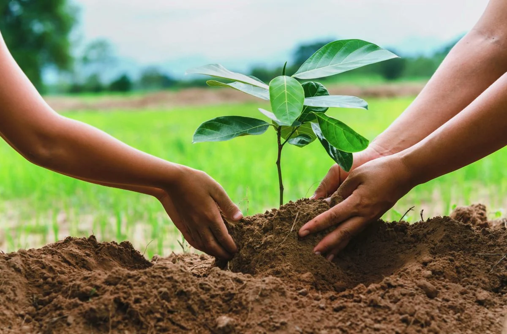

About Urban Greening Hub
Urban Greening Hub is a community-focused initiative that promotes urban tree planting, green infrastructure, and sustainable landscaping practices. The program supports the integration of natural environments into urban areas to improve environmental quality and community well-being.
The initiative encourages residents, schools, businesses, and local organizations to participate in tree planting, habitat restoration, and public greening projects. Educational resources are provided to support responsible tree selection, planting methods, and long-term maintenance.
Urban Greening Hub aims to increase urban biodiversity, improve air quality, reduce heat-island effects, and create healthier public spaces. The program promotes sustainable environmental stewardship through practical community engagement and environmental education.

Program Objectives
- Increase urban tree canopy coverage
- Promote sustainable community development
- Support biodiversity and ecological resilience
- Improve environmental awareness and education
- Encourage volunteer participation in greening projects
Participation Guidelines
Community members, schools, businesses, and nonprofit organizations are welcome to participate in approved planting and environmental improvement activities. Training materials and planting recommendations are provided through the program.
Program Duration
Urban Greening Hub is an ongoing environmental initiative with seasonal planting activities, year-round community education, and long-term monitoring of planted vegetation and green spaces.
Environmental Benefits
Urban greening projects contribute to improved air quality, carbon sequestration, stormwater management, temperature regulation, habitat creation, and enhanced community livability in urban environments.